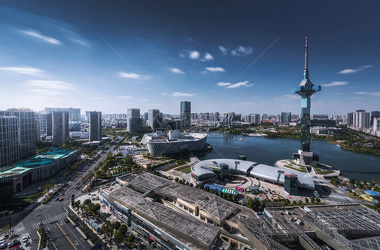
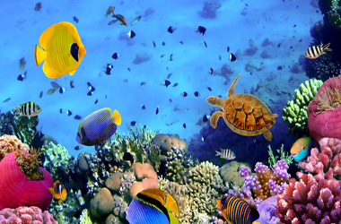

昆明+大理+丽江6日跟团游
Nov. 15th 21质特色：行程合理轻松，有足够的时间游览景点。丽江住两晚，充分感受丽江一米阳光的美好！ 安全保障：云南旅游组合险、旅行社责任险让您玩转彩云之南！ 贴心服务：全程每人赠送4瓶矿泉水，昆明国语导游陪同，丽江国语地陪尽心完善让你感受贴心周到的照顾与服务！ 感受云南各民族的风土人情！
查看

盐城+连云港5日跟团游
Nov. 15th 21给您的舌尖带来意想不到的“惊喜”！
安排一餐丽江特色菜肴--腊排骨火锅，健康、环保、添加名贵中药材，好吃不上火！
特别推荐：盐城美食篇之1、藕粉圆子2、阜宁大糕3、东台鱼汤面4、生炝条虾5、杨五香肠
连云港美食篇之1、豆腐卷2、蒸糕3、凉皮4、棉花糖5、煎饼


澳大利亚大堡礁7日游
Nov. 10th 21穷游行程助手 规划行程利器，国内用不了谷歌地图，所以行前的规划特别辛苦。这个App有地图版，能很直观得在地图上看到你想去的那些地方都在哪里。使用方法很简单，把你当天想去的地方拖进当日行程里，然后让系统帮你优化路线，还可以自己调整，从此再也不用愁在路上浪费时间来回周转了。 1.阿金考特珊瑚礁（外堡礁） 距离海岸最远，是最原始的大堡礁群，独特的自然环境孕育出非常特别的珊瑚礁群。因为远，去的人也比较少，所以也是保存得最完好的。 2.摩尔礁（外堡礁） 在大堡礁公园的外缘，是距离凯恩斯最近的外堡礁，名气也比较大，游客也比较多。
查看